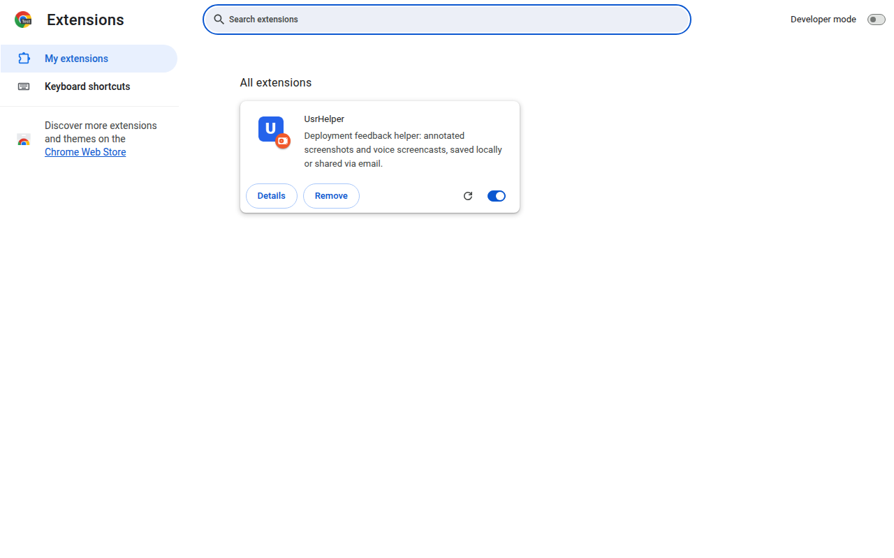
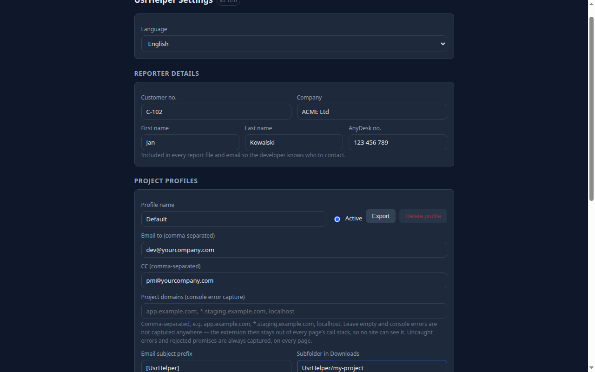
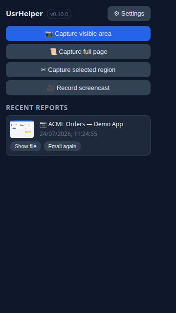
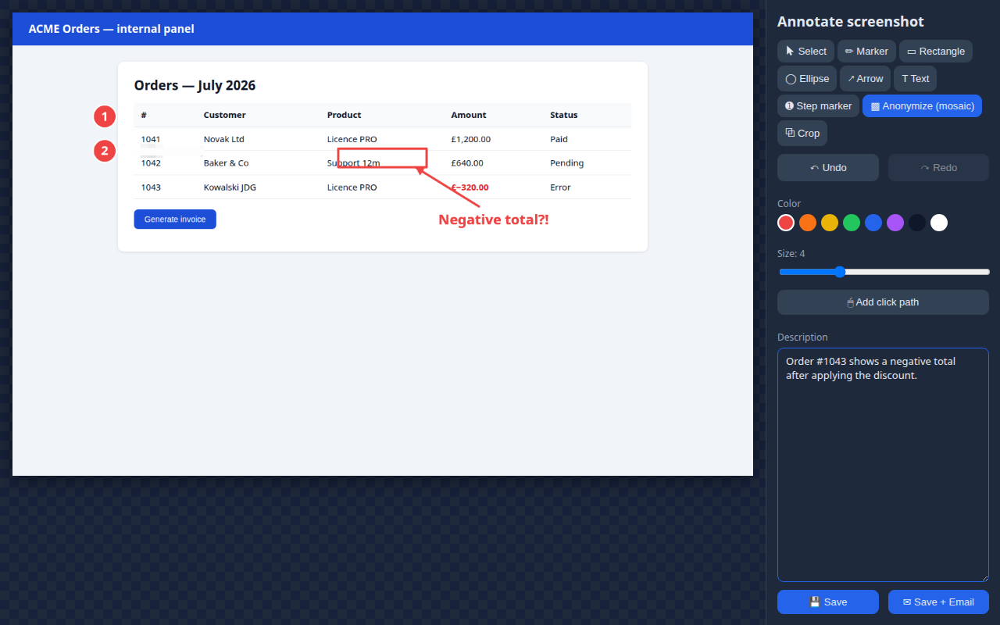
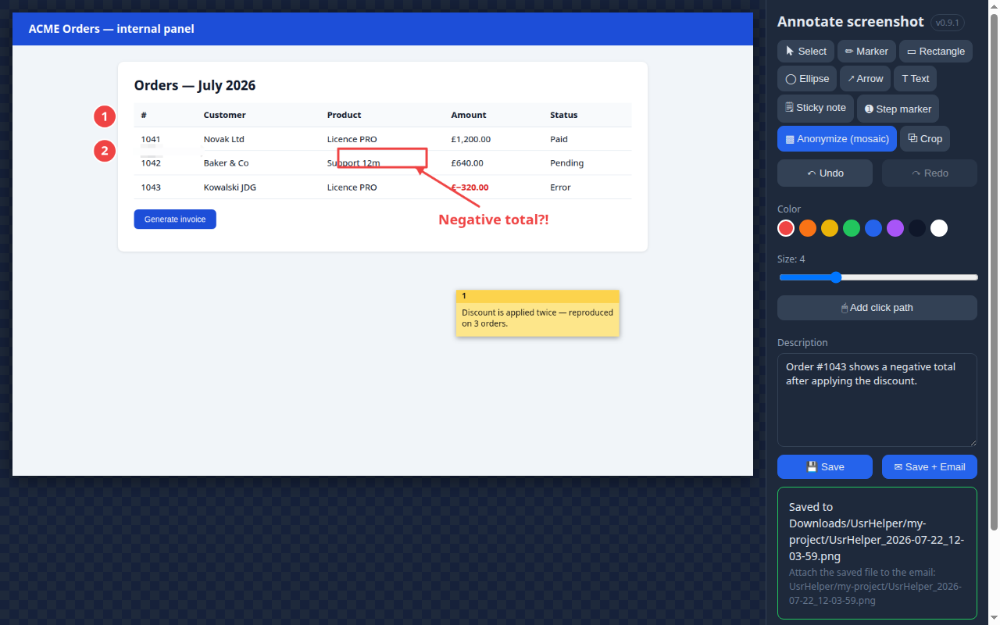
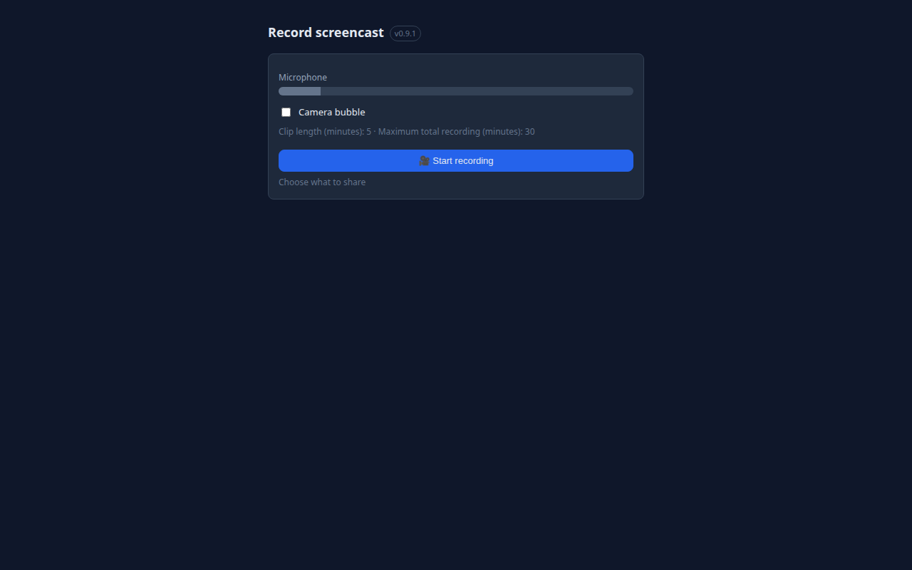
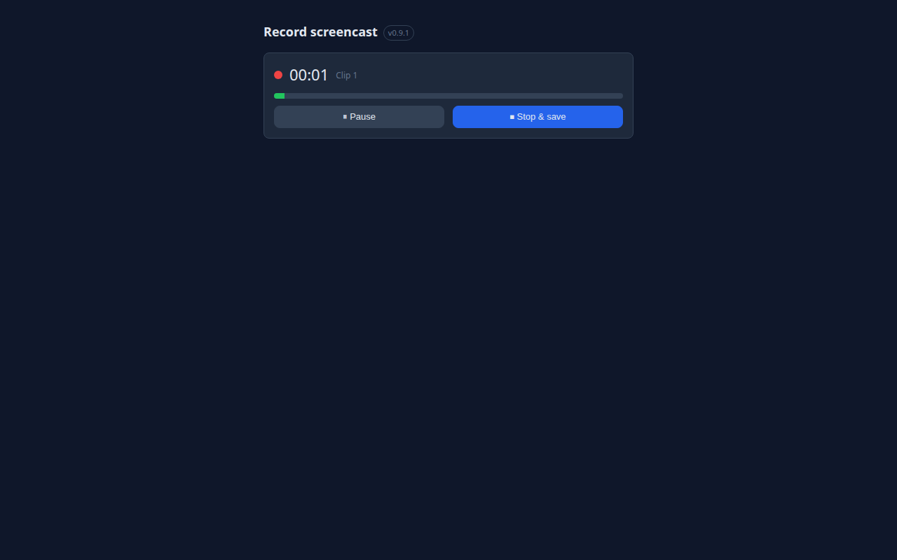
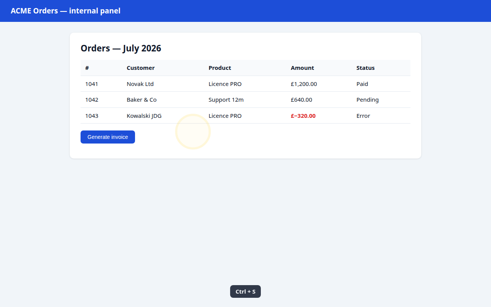
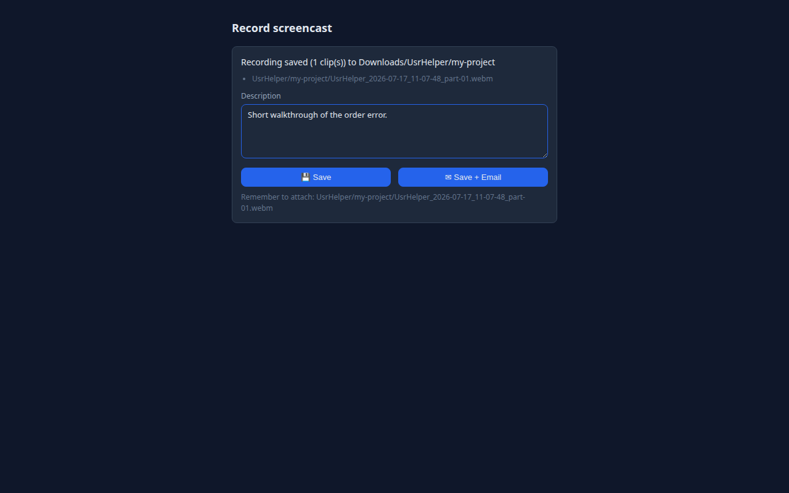

UsrHelper — User Guide
Extension version: 0.4.1+ · Wersja polska
UsrHelper is a Chrome extension that makes reporting issues during software deployments effortless. Take an annotated screenshot or record a screencast with voice narration — the finished report is saved on your disk and handed to email in one click. Everything stays on your machine; the extension sends no data to any server.
Table of contents
- Installation
- First-time setup
- Screenshots
- Annotation editor
- Recording screencasts
- History and project profiles
- What a report contains
- Troubleshooting (FAQ)
1. Installation
The easy way — install from the Chrome Web Store. One click, automatic updates, nothing else to do. Then skip to First-time setup.
The rest of this section covers the manual install, which you only need if your organisation blocks the Web Store or you want to run a specific build.
- Download the latest
usrhelper-X.Y.Z-chrome.zip from GitHub Releases.
- Unpack the archive into a permanent folder (e.g.
C:\UsrHelper or ~/UsrHelper). The folder must stay on disk — Chrome loads the extension from there.
- Open
chrome://extensions and enable Developer mode (toggle in the top-right corner).
- Click Load unpacked and select the unpacked folder (the one containing
manifest.json).
- Pin the U icon to the toolbar: puzzle-piece icon → pin next to "UsrHelper".

Updating: download the new zip, replace the folder contents, and click ⟳ (Reload) next to the extension on chrome://extensions.
2. First-time setup
Open the settings: click the U icon → ⚙ Settings (or chrome://extensions → UsrHelper → Details → Extension options).

Configure top to bottom:
| Section |
What to enter |
| Language |
English (default) or Polski. |
| Reporter details |
Customer no., company, first and last name, AnyDesk number — included in every report and email so the developer knows who is reporting and how to connect. |
| Project profiles |
Recipient addresses (Email to) and carbon copy (CC), comma-separated; email subject prefix (e.g. [Project X]); the subfolder in Downloads where files land; an optional description template; and recording limits (clip length / maximum total). |
| Toggles |
Click/keystroke visualization on recordings, timestamp overlay, camera bubble, click-path tracking, console error capture. |
Every change saves automatically (green "Settings saved" toast).
3. Screenshots
Click the U icon in the toolbar:

Three capture modes are available:
- 📷 Capture visible area — instant capture of what you see in the window.
- 📜 Capture full page — the extension scrolls the page top to bottom and stitches one tall image (sticky headers appear only once).
- ✂ Capture selected region — the cursor becomes a crosshair; drag a rectangle over the page.
Esc cancels.
Each capture opens the annotation editor in a new tab.
Note: browser-internal pages (chrome://…, Chrome Web Store) cannot be captured — the buttons will be greyed out there.
4. Annotation editor

Tools (right-hand panel):
| Tool |
What it does |
| Select |
Click an annotation to select; drag to move; Delete removes it. |
| Marker |
Freehand drawing. |
| Rectangle / Ellipse |
Frame the relevant element. |
| Arrow |
Point at the problem. |
| Text |
Click on the image, type, confirm with Enter (Esc cancels). |
| Step marker |
Each click drops a numbered circle (1, 2, 3…) — perfect for step-by-step instructions. |
| Anonymize (mosaic) |
Paint over sensitive data (names, amounts, tokens) — the area is irreversibly turned into a pixel mosaic in the saved file. |
| Crop |
Drag a rectangle and click "Apply crop". |
Plus: color and size pickers, full Undo / Redo (Ctrl+Z / Ctrl+Y), and the "Add click path" button — it stamps orange numbered markers where you clicked on the page before capturing.
Describe the issue in the Description field, then:
- 💾 Save — a PNG plus a
.json metadata file land in Downloads/<subfolder>/ with a timestamp in the name (e.g. UsrHelper_2026-07-17_14-32-05.png);
- ✉ Save + Email — additionally opens a new message in your mail client with recipients, subject, and description pre-filled. You attach the file manually — the extension shows the exact path of the saved file.

5. Recording screencasts
Click 🎥 Record screencast in the popup. The recording panel opens:

- Check the microphone — the green bar moves when you speak. No movement = no audio on the recording.
- Optionally enable the camera bubble (your face in a circle, Loom-style).
- Click Start recording and pick what to share in Chrome's dialog: tab / window / entire screen.
- After the 3-2-1 countdown the recording starts — switch freely between tabs and applications.

While recording, pages show: yellow ripples on clicks (blue for right-click), key captions (e.g. Ctrl + S — plain typing is never shown, for privacy), and a clock in the corner:

Pause / Resume stops the clock and the recording. ⏹ Stop & save ends the session. The recording splits automatically into standalone clips (default: 5 minutes each, 30-minute total cap — configurable per profile). Each clip is a separate .webm file (…_part-01.webm, …_part-02.webm).

After stopping, add a description and click 💾 Save (writes the .json metadata) or ✉ Save + Email.
6. History and project profiles
The popup lists your recent reports with thumbnails:
- Show file — opens the file manager with the file selected;
- Email again — opens a new email message with the report details.
If you have several project profiles (different recipients, folders, limits), switch them in the popup with a single dropdown — all subsequent reports use the active profile.
7. What a report contains
Every report is a set of files in Downloads/<subfolder>/:
| File |
Contents |
UsrHelper_<date>_<time>.png |
The annotated screenshot with a timestamp in the corner. |
UsrHelper_<date>_<time>_part-NN.webm |
Recording clips (with the burned-in clock and camera bubble). |
UsrHelper_<date>_<time>.json |
Description, reporter details, exact time, page URL and title, environment (browser, OS, resolution), recent JavaScript console errors, click path, file list. |
The timestamp lives in three places: the file name, visibly on the image/recording, and in the .json — easy to correlate with server logs.
8. Troubleshooting (FAQ)
The capture buttons are greyed out. You are on a browser-internal page (chrome://…) or the Chrome Web Store — these cannot be captured. Switch to a regular page.
The recording has no audio. Chrome blocked the microphone for the extension. Click the lock/permissions icon in the recorder tab's address bar and allow the microphone, or check your system microphone. The panel warns before starting when no mic is available.
The recording stopped by itself. You hit the maximum length (default 30 min). All clips up to that point are saved. Change the limit in the profile settings.
Where are my files? In Downloads/<subfolder>/ (set the subfolder in the profile; default UsrHelper). Fastest route: popup → Show file.
The email opens without the attachment. That is a mailto: limitation — no mail client lets an extension attach files automatically. The extension shows the exact path; drag the file into the message.
Is the mosaic really safe? Yes. The mosaic is baked into the PNG's pixel data at save time — the original pixels cannot be recovered from the exported file.
UsrHelper · github.com/AmigoUK/UsrHelper · Project & Development: Tomasz 'Amigo' Lewandowski · dev@attv.uk · www.attv.uk
UsrHelper — Instrukcja użytkownika
Wersja wtyczki: 0.4.1+ · English version
UsrHelper to wtyczka do przeglądarki Chrome, która ułatwia zgłaszanie uwag podczas wdrożeń oprogramowania. Robisz zrzut ekranu z adnotacjami albo nagrywasz screencast z komentarzem głosowym, a gotowy raport zapisuje się na Twoim dysku i jednym kliknięciem trafia do emaila. Wszystko zostaje na Twoim komputerze — wtyczka nie wysyła danych na żaden serwer.
Spis treści
- Instalacja
- Pierwsza konfiguracja
- Zrzuty ekranu
- Edytor adnotacji
- Nagrywanie screencastów
- Historia i profile projektów
- Co zawiera raport
- Rozwiązywanie problemów (FAQ)
1. Instalacja
Najprościej — zainstaluj z Chrome Web Store. Jedno kliknięcie, automatyczne aktualizacje, nic więcej nie trzeba robić. Potem przejdź od razu do Pierwszej konfiguracji.
Dalsza część tego rozdziału opisuje instalację ręczną — potrzebujesz jej tylko wtedy, gdy Twoja firma blokuje Web Store albo chcesz uruchomić konkretną wersję.
- Pobierz najnowszy plik
usrhelper-X.Y.Z-chrome.zip z GitHub Releases.
- Rozpakuj archiwum do stałego folderu (np.
C:\UsrHelper albo ~/UsrHelper). Folder musi pozostać na dysku — Chrome ładuje wtyczkę z tego miejsca.
- Otwórz
chrome://extensions i włącz Tryb dewelopera (przełącznik w prawym górnym rogu).
- Kliknij Załaduj rozpakowane (Load unpacked) i wskaż rozpakowany folder (ten z plikiem
manifest.json).
- Przypnij ikonę U do paska: kliknij ikonę puzzla → pinezka obok „UsrHelper".
Aktualizacja: pobierz nowy zip, podmień zawartość folderu i kliknij ⟳ (Odśwież) przy wtyczce na chrome://extensions.
2. Pierwsza konfiguracja
Otwórz ustawienia: kliknij ikonę U → ⚙ Settings (albo chrome://extensions → UsrHelper → Szczegóły → Opcje rozszerzenia).
Ustaw kolejno:
| Sekcja |
Co wpisać |
| Language |
Polski — cały interfejs przełączy się na polski (domyślnie English). |
| Dane zgłaszającego |
Nr klienta, firma, imię, nazwisko i numer AnyDesk — trafiają do każdego raportu i emaila, żeby developer wiedział, kto zgłasza i jak się połączyć. |
| Profile projektów |
Adresy email odbiorców (Email to) i kopii (CC) rozdzielone przecinkami, prefiks tematu (np. [Projekt X]), podfolder w Pobranych gdzie lądują pliki, opcjonalny szablon opisu oraz limity nagrania (długość klipu / maksymalny czas). |
| Przełączniki |
Wizualizacja kliknięć i klawiszy na nagraniu, znacznik czasu, dymek z kamerką, śledzenie ścieżki kliknięć, przechwytywanie błędów konsoli. |
Każda zmiana zapisuje się automatycznie (zielony komunikat „Zapisano ustawienia").
3. Zrzuty ekranu
Kliknij ikonę U na pasku:
Do wyboru są trzy tryby:
- 📷 Zrzut widocznego obszaru — natychmiastowy zrzut tego, co widać w oknie.
- 📜 Zrzut całej strony — wtyczka sama przewija stronę od góry do dołu i skleja jeden wysoki obraz (przyklejone nagłówki pojawiają się tylko raz).
- ✂ Zrzut zaznaczonego fragmentu — kursor zmienia się w celownik; przeciągnij prostokąt po stronie. Klawisz
Esc anuluje.
Po każdym zrzucie otwiera się edytor adnotacji w nowej karcie.
Uwaga: stron wewnętrznych przeglądarki (chrome://…, Chrome Web Store) nie da się przechwycić — przyciski będą wyszarzone.
4. Edytor adnotacji
Narzędzia (pasek po prawej):
| Narzędzie |
Działanie |
| Zaznacz |
Kliknij adnotację, aby ją zaznaczyć; przeciągnij, aby przesunąć; Delete usuwa. |
| Marker |
Odręczne rysowanie. |
| Prostokąt / Elipsa |
Ramka wokół istotnego elementu. |
| Strzałka |
Wskazanie miejsca problemu. |
| Tekst |
Kliknij na obrazie, wpisz treść, zatwierdź Enter (Esc anuluje). |
| Znacznik kroku |
Każde kliknięcie stawia kółko z kolejnym numerem (1, 2, 3…) — idealne do instrukcji „krok po kroku". |
| Anonimizuj (mozaika) |
Zamaluj dane wrażliwe (nazwiska, kwoty, tokeny) — obszar zostaje nieodwracalnie zamieniony w mozaikę pikselową w zapisanym pliku. |
| Kadruj |
Przeciągnij prostokąt i kliknij „Zastosuj kadr". |
Dodatkowo: wybór koloru i grubości, pełne Cofnij / Ponów (Ctrl+Z / Ctrl+Y) oraz przycisk „Nanieś ścieżkę kliknięć" — stawia pomarańczowe numerowane znaczniki w miejscach, które klikałeś na stronie przed zrobieniem zrzutu.
W polu Opis opisz problem lub instrukcję, następnie:
- 💾 Zapisz — plik PNG + plik
.json z metadanymi lądują w Pobrane/<podfolder>/ z timestampem w nazwie (np. UsrHelper_2026-07-17_14-32-05.png);
- ✉ Zapisz + Email — dodatkowo otwiera się nowa wiadomość w Twoim programie pocztowym z adresatami, tematem i opisem. Załącznik musisz dodać ręcznie — wtyczka pokazuje dokładną ścieżkę zapisanego pliku.
5. Nagrywanie screencastów
Kliknij 🎥 Nagraj screencast w popupie. Otworzy się panel nagrywania:
- Sprawdź mikrofon — zielony pasek porusza się, gdy mówisz. Brak paska = brak dźwięku na nagraniu.
- Opcjonalnie włącz dymek z kamerką (Twój obraz w kółku, styl Loom).
- Kliknij Rozpocznij nagrywanie i w oknie Chrome wybierz, co udostępniasz: karta / okno / cały ekran.
- Po odliczaniu 3-2-1 nagranie startuje — możesz swobodnie przełączać się na inne karty i aplikacje.
Podczas nagrania na stronach widoczne są: żółte kręgi przy kliknięciach (niebieskie dla prawego przycisku), podpisy klawiszy (np. Ctrl + S — zwykłe pisanie nie jest pokazywane, prywatność!) oraz zegar w rogu:
Pauza / Wznów zatrzymuje zegar i nagranie. ⏹ Zatrzymaj i zapisz kończy sesję. Nagranie dzieli się automatycznie na samodzielne klipy (domyślnie po 5 minut, limit całości 30 minut — konfigurowalne w profilu). Każdy klip to osobny plik .webm (…_part-01.webm, …_part-02.webm).
Po zatrzymaniu dopisz opis i kliknij 💾 Zapisz (metadane .json) lub ✉ Zapisz + Email.
6. Historia i profile projektów
Popup pokazuje ostatnie zgłoszenia z miniaturami:
- Pokaż plik — otwiera menedżer plików z zaznaczonym plikiem;
- Wyślij ponownie — otwiera nową wiadomość email z danymi zgłoszenia.
Jeśli masz kilka profili projektów (różni odbiorcy, foldery, limity), przełączasz je w popupie jedną listą rozwijaną — wszystkie kolejne zgłoszenia używają aktywnego profilu.
7. Co zawiera raport
Każde zgłoszenie to komplet plików w Pobrane/<podfolder>/:
| Plik |
Zawartość |
UsrHelper_<data>_<czas>.png |
Zrzut z adnotacjami i timestampem w rogu. |
UsrHelper_<data>_<czas>_part-NN.webm |
Klipy nagrania (z wypalonym zegarem i dymkiem kamerki). |
UsrHelper_<data>_<czas>.json |
Opis, dane zgłaszającego, dokładny czas, adres i tytuł strony, środowisko (przeglądarka, system, rozdzielczość), ostatnie błędy konsoli JavaScript, ścieżka kliknięć, lista plików. |
Timestamp jest w trzech miejscach: w nazwie pliku, widoczny na obrazie/nagraniu i w pliku .json — łatwo powiązać zgłoszenie z logami serwera.
8. Rozwiązywanie problemów (FAQ)
Przyciski zrzutów są wyszarzone. Jesteś na stronie wewnętrznej przeglądarki (chrome://…) lub w Chrome Web Store — tych stron nie można przechwytywać. Przejdź na zwykłą stronę.
Nagranie nie ma dźwięku. Chrome zablokował mikrofon dla wtyczki. Kliknij ikonę kłódki/suwaków przy pasku adresu panelu nagrywania i zezwól na mikrofon, albo sprawdź mikrofon systemowy. Panel ostrzega przed startem, gdy mikrofonu brak.
Nagranie zatrzymało się samo. Osiągnąłeś maksymalny czas (domyślnie 30 min). Wszystkie klipy do tego momentu są zapisane. Limit zmienisz w ustawieniach profilu.
Gdzie są moje pliki? W folderze Pobrane/<podfolder>/ (podfolder ustawiasz w profilu; domyślnie UsrHelper). Najszybciej: popup → Pokaż plik.
Email otwiera się bez załącznika. To ograniczenie mechanizmu mailto: — żaden program nie pozwala wtyczce samodzielnie dołączyć pliku. Wtyczka pokazuje dokładną ścieżkę; przeciągnij plik do wiadomości.
Zamazane dane — czy na pewno bezpieczne? Tak. Mozaika jest wtapiana w pikselową zawartość pliku PNG przy zapisie — oryginalnych pikseli nie da się odzyskać z pliku wynikowego.
UsrHelper · github.com/AmigoUK/UsrHelper · Project & Development: Tomasz 'Amigo' Lewandowski · dev@attv.uk · www.attv.uk